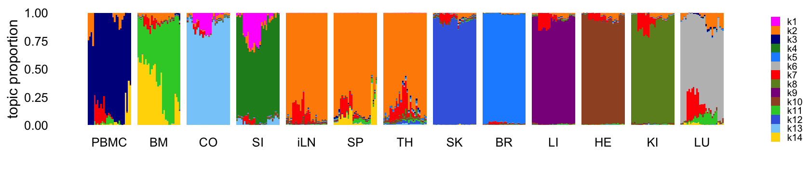
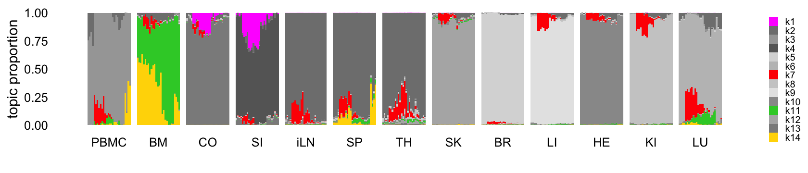
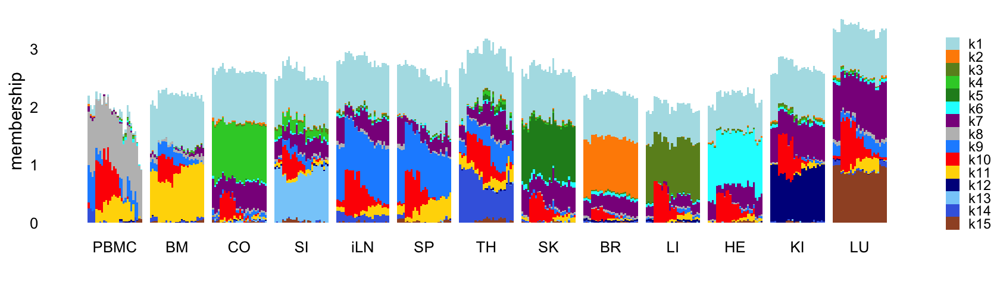
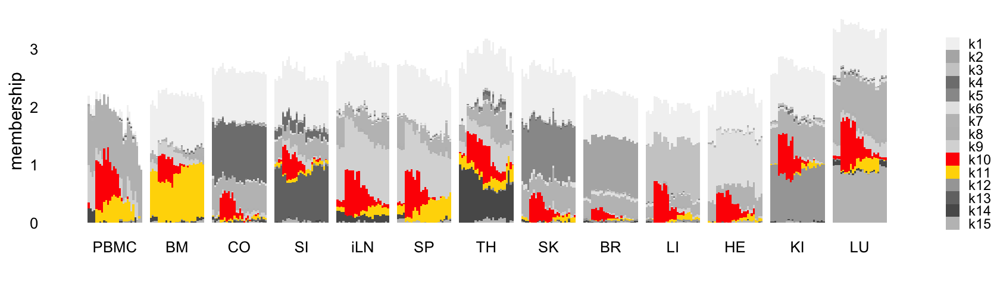

Last updated: 2025-06-06
Checks: 6 1
Knit directory:
single-cell-jamboree/analysis/
This reproducible R Markdown analysis was created with workflowr (version 1.7.1). The Checks tab describes the reproducibility checks that were applied when the results were created. The Past versions tab lists the development history.
Great! Since the R Markdown file has been committed to the Git repository, you know the exact version of the code that produced these results.
Great job! The global environment was empty. Objects defined in the global environment can affect the analysis in your R Markdown file in unknown ways. For reproduciblity it’s best to always run the code in an empty environment.
The command set.seed(1) was run prior to running the
code in the R Markdown file. Setting a seed ensures that any results
that rely on randomness, e.g. subsampling or permutations, are
reproducible.
Great job! Recording the operating system, R version, and package versions is critical for reproducibility.
To ensure reproducibility of the results, delete the cache directory
lps_cache and re-run the analysis. To have workflowr
automatically delete the cache directory prior to building the file, set
delete_cache = TRUE when running wflow_build()
or wflow_publish().
Great job! Using relative paths to the files within your workflowr project makes it easier to run your code on other machines.
Great! You are using Git for version control. Tracking code development and connecting the code version to the results is critical for reproducibility.
The results in this page were generated with repository version f38b586. See the Past versions tab to see a history of the changes made to the R Markdown and HTML files.
Note that you need to be careful to ensure that all relevant files for
the analysis have been committed to Git prior to generating the results
(you can use wflow_publish or
wflow_git_commit). workflowr only checks the R Markdown
file, but you know if there are other scripts or data files that it
depends on. Below is the status of the Git repository when the results
were generated:
Untracked files:
Untracked: analysis/lps_cache/
Untracked: analysis/mcf7_cache/
Untracked: analysis/temp2.R
Untracked: data/GSE132188_adata.h5ad.h5
Untracked: data/GSE183010/
Untracked: data/Immune_ALL_human.h5ad
Untracked: data/pancreas_cytokine.RData
Untracked: data/pancreas_endocrine.RData
Untracked: data/pancreas_endocrine_alldays.h5ad
Note that any generated files, e.g. HTML, png, CSS, etc., are not included in this status report because it is ok for generated content to have uncommitted changes.
These are the previous versions of the repository in which changes were
made to the R Markdown (analysis/lps.Rmd) and HTML
(docs/lps.html) files. If you’ve configured a remote Git
repository (see ?wflow_git_remote), click on the hyperlinks
in the table below to view the files as they were in that past version.
| File | Version | Author | Date | Message |
|---|---|---|---|---|
| Rmd | f38b586 | Peter Carbonetto | 2025-06-06 | A small fix to the lps analysis. |
| Rmd | aae4257 | Peter Carbonetto | 2025-06-06 | A couple fixes to the lps analysis. |
| Rmd | 6cbad5f | Peter Carbonetto | 2025-06-06 | Added a structure plot to the lps analysis. |
| Rmd | 90d6c06 | Peter Carbonetto | 2025-06-06 | Improved the structure plots in the lps analysis. |
| Rmd | dac95b5 | Peter Carbonetto | 2025-06-06 | Made a few changes to the flashier fit in the lps analysis. |
| Rmd | 9e1f127 | Peter Carbonetto | 2025-06-05 | Added code to pancreas_cytokine analysis to prepare the scrna-seq data downloaded from geo. |
| Rmd | 8d945a1 | Peter Carbonetto | 2025-06-04 | Added flashier fit to lps analysis; need to revise this and the topic modeling result. |
| Rmd | dac6198 | Peter Carbonetto | 2025-06-04 | Working on topic modeling results for lps data. |
| Rmd | 8f39607 | Peter Carbonetto | 2025-06-04 | Added steps to the lps analysis to load and prepare the data. |
| html | 2bfef0b | Peter Carbonetto | 2025-06-04 | First build of the LPS analysis. |
| Rmd | 85adf3f | Peter Carbonetto | 2025-06-04 | wflow_publish("lps.Rmd") |
Here we will revisit the LPS data set that we analyzed using a topic model in the Takahama et al Nat Immunol paper. (LPS = lipopolysaccharide).
Load packages used to process the data, perform the analyses, and create the plots.
library(data.table)
library(fastTopics)
library(NNLM)
library(ebnm)
library(flashier)
library(singlecelljamboreeR)
library(ggplot2)
library(cowplot)Set the seed for reproducibility:
set.seed(1)Load the RNA-seq counts:
read_lps_data <- function (file) {
counts <- fread(file)
class(counts) <- "data.frame"
genes <- counts[,1]
counts <- t(as.matrix(counts[,-1]))
colnames(counts) <- genes
samples <- rownames(counts)
samples <- strsplit(samples,"_")
samples <- data.frame(tissue = sapply(samples,"[[",1),
timepoint = sapply(samples,"[[",2),
mouse = sapply(samples,"[[",3))
samples <- transform(samples,
tissue = factor(tissue),
timepoint = factor(timepoint),
mouse = factor(mouse))
return(list(samples = samples,counts = counts))
}
out <- read_lps_data("../data/lps.csv.gz")
samples <- out$samples
counts <- out$counts
rm(out)Remove a sample that appears to be an outlier based on the NMF analyses:
i <- which(rownames(counts) != "iLN_d2_20")
samples <- samples[i,]
counts <- counts[i,]Remove genes that are expressed in fewer than 5 samples:
j <- which(colSums(counts > 0) > 4)
counts <- counts[,j]This is the dimension of the data set we will analyze:
dim(counts)
# [1] 363 33533For the Gaussian-based analyses, we will need the shifted log counts:
a <- 1
s <- rowSums(counts)
s <- s/mean(s)
shifted_log_counts <- log1p(counts/(a*s))Fit a topic model with \(K = 14\) topics to the counts:
tm <- fit_poisson_nmf(counts,k = 14,init.method = "random",method = "em",
numiter = 20,verbose = "none",
control = list(numiter = 4,nc = 8,extrapolate = FALSE))
tm <- fit_poisson_nmf(counts,fit0 = tm,method = "scd",numiter = 40,
control = list(numiter = 4,nc = 8,extrapolate = TRUE),
verbose = "none")
Warning: The above code chunk cached its results, but
it won’t be re-run if previous chunks it depends on are updated. If you
need to use caching, it is highly recommended to also set
knitr::opts_chunk$set(autodep = TRUE) at the top of the
file (in a chunk that is not cached). Alternatively, you can customize
the option dependson for each individual chunk that is
cached. Using either autodep or dependson will
remove this warning. See the
knitr cache options for more details.
Structure plot comparing the topics to the organ types:
rows <- order(samples$timepoint)
topic_colors <- c("magenta","darkorange","darkblue","forestgreen",
"dodgerblue","gray","red","olivedrab","darkmagenta",
"sienna","limegreen","royalblue","lightskyblue",
"gold")
samples <- transform(samples,
tissue = factor(tissue,c("PBMC","BM","LU","CO","SI","iLN","SP",
"TH","SK","KI","LI","BR","HE")))
structure_plot(tm,grouping = samples$tissue,gap = 4,
topics = 1:14,colors = topic_colors,
loadings_order = rows) +
labs(fill = "") +
theme(axis.text.x = element_text(angle = 0,hjust = 0.5),
legend.key.height = unit(0.01,"cm"),
legend.key.width = unit(0.2,"cm"),
legend.text = element_text(size = 6))
Abbreviations used: BM = bone marrow; BR = brain; CO = colon; HE = heart; iLN = inguinal lymph node; KI = kidney; LI = liver; LU = lung; SI = small intestine; SK = skin; SP = spleen; TH = thymus.
This next structure plot better highlights the topics that capture the processes driven by LPS-induced sepsis:
topic_colors <- c("magenta","gray50","gray65","gray40",
"gray85","gray75","red","gray80","gray90",
"gray60","limegreen","gray70","gray55",
"gold")
structure_plot(tm,grouping = samples$tissue,gap = 4,
topics = 1:14,colors = topic_colors,
loadings_order = rows) +
labs(fill = "") +
theme(axis.text.x = element_text(angle = 0,hjust = 0.5),
legend.key.height = unit(0.01,"cm"),
legend.key.width = unit(0.2,"cm"),
legend.text = element_text(size = 6))
Next fit an NMF to the shifted log counts using flashier, with \(K = 15\):
k <- 15
n <- nrow(shifted_log_counts)
m <- ncol(shifted_log_counts)
nmf0 <- nnmf(shifted_log_counts,k = 1,loss = "mse",method = "scd",
max.iter = 10,verbose = 0,n.threads = 4)
W0 <- nmf0$W
H0 <- nmf0$H
W0 <- cbind(W0,matrix(runif(n*(k-1)),n,k-1))
H0 <- rbind(H0,matrix(runif(m*(k-1)),k-1,m))
nmf <- nnmf(shifted_log_counts,k,init = list(W = W0,H = H0),
loss = "mse",method = "scd",max.iter = 10,
verbose = 0,n.threads = 8)
x <- rpois(1e7,1/n)
s1 <- sd(log(x + 1))
sparse_prior <- ebnm_point_exponential(x = c(rep(1,100)))
sparse_prior$fitted_g$pi <- c(0.99,0.01)
ebnm_sparse_prior <- flash_ebnm(prior_family = "point_exponential",
fix_g = TRUE,g_init = sparse_prior)
fl_nmf <- flash_init(shifted_log_counts,var_type = 2,S = s1)
fl_nmf <- flash_factors_init(fl_nmf,list(nmf$W,t(nmf$H)),
c(ebnm_sparse_prior,ebnm_point_exponential))
fl_nmf <- flash_backfit(fl_nmf,extrapolate = FALSE,maxiter = 100,verbose = 0)
fl_nmf <- flash_backfit(fl_nmf,extrapolate = TRUE,maxiter = 100,verbose = 0)
Warning: The above code chunk cached its results, but
it won’t be re-run if previous chunks it depends on are updated. If you
need to use caching, it is highly recommended to also set
knitr::opts_chunk$set(autodep = TRUE) at the top of the
file (in a chunk that is not cached). Alternatively, you can customize
the option dependson for each individual chunk that is
cached. Using either autodep or dependson will
remove this warning. See the
knitr cache options for more details.
Structure plot comparing the factors to the organ types:
rows <- order(samples$timepoint)
topic_colors <- c("powderblue","dodgerblue","olivedrab","limegreen",
"forestgreen","red","darkmagenta","gray","darkorange",
"cyan","royalblue","darkblue","lightskyblue",
"gold","sienna")
L <- ldf(fl_nmf,type = "i")$L
structure_plot(L,grouping = samples$tissue,gap = 4,
topics = 1:15,colors = topic_colors,
loadings_order = rows) +
labs(fill = "",y = "membership") +
theme(axis.text.x = element_text(angle = 0,hjust = 0.5),
legend.key.height = unit(0.01,"cm"),
legend.key.width = unit(0.25,"cm"),
legend.text = element_text(size = 7))
This next structure plot better highlights the topics that capture the processes driven by LPS-induced sepsis:
rows <- order(samples$timepoint)
topic_colors <- c("gray95","gray70","gray80","limegreen",
"gray60","red","gray75","gray","gray85",
"gray90","gray65","gray50","gray45",
"gray35","gray75")
L <- ldf(fl_nmf,type = "i")$L
structure_plot(L,grouping = samples$tissue,gap = 4,
topics = 1:15,colors = topic_colors,
loadings_order = rows) +
labs(fill = "",y = "membership") +
theme(axis.text.x = element_text(angle = 0,hjust = 0.5),
legend.key.height = unit(0.01,"cm"),
legend.key.width = unit(0.25,"cm"),
legend.text = element_text(size = 7))
sessionInfo()
# R version 4.3.3 (2024-02-29)
# Platform: aarch64-apple-darwin20 (64-bit)
# Running under: macOS 15.4.1
#
# Matrix products: default
# BLAS: /Library/Frameworks/R.framework/Versions/4.3-arm64/Resources/lib/libRblas.0.dylib
# LAPACK: /Library/Frameworks/R.framework/Versions/4.3-arm64/Resources/lib/libRlapack.dylib; LAPACK version 3.11.0
#
# locale:
# [1] en_US.UTF-8/en_US.UTF-8/en_US.UTF-8/C/en_US.UTF-8/en_US.UTF-8
#
# time zone: America/Chicago
# tzcode source: internal
#
# attached base packages:
# [1] stats graphics grDevices utils datasets methods base
#
# other attached packages:
# [1] workflowr_1.7.1 cowplot_1.1.3
# [3] ggplot2_3.5.0 singlecelljamboreeR_0.1-3
# [5] flashier_1.0.55 ebnm_1.1-34
# [7] NNLM_0.4.4 fastTopics_0.7-25
# [9] data.table_1.17.4
#
# loaded via a namespace (and not attached):
# [1] pbapply_1.7-2 rlang_1.1.5 magrittr_2.0.3
# [4] git2r_0.33.0 horseshoe_0.2.0 compiler_4.3.3
# [7] getPass_0.2-4 callr_3.7.5 vctrs_0.6.5
# [10] reshape2_1.4.4 quadprog_1.5-8 stringr_1.5.1
# [13] pkgconfig_2.0.3 crayon_1.5.2 fastmap_1.1.1
# [16] labeling_0.4.3 utf8_1.2.4 promises_1.2.1
# [19] rmarkdown_2.26 ps_1.7.6 purrr_1.0.2
# [22] xfun_0.42 cachem_1.0.8 trust_0.1-8
# [25] jsonlite_1.8.8 progress_1.2.3 highr_0.10
# [28] later_1.3.2 irlba_2.3.5.1 parallel_4.3.3
# [31] prettyunits_1.2.0 R6_2.5.1 bslib_0.6.1
# [34] stringi_1.8.3 RColorBrewer_1.1-3 SQUAREM_2021.1
# [37] jquerylib_0.1.4 Rcpp_1.0.12 knitr_1.45
# [40] R.utils_2.12.3 httpuv_1.6.14 Matrix_1.6-5
# [43] splines_4.3.3 tidyselect_1.2.1 rstudioapi_0.15.0
# [46] yaml_2.3.8 codetools_0.2-19 processx_3.8.3
# [49] lattice_0.22-5 tibble_3.2.1 plyr_1.8.9
# [52] withr_3.0.2 evaluate_1.0.3 Rtsne_0.17
# [55] RcppParallel_5.1.10 pillar_1.9.0 whisker_0.4.1
# [58] plotly_4.10.4 softImpute_1.4-1 generics_0.1.3
# [61] rprojroot_2.0.4 invgamma_1.1 truncnorm_1.0-9
# [64] hms_1.1.3 munsell_0.5.0 scales_1.3.0
# [67] ashr_2.2-66 gtools_3.9.5 RhpcBLASctl_0.23-42
# [70] glue_1.8.0 scatterplot3d_0.3-44 lazyeval_0.2.2
# [73] tools_4.3.3 fs_1.6.5 grid_4.3.3
# [76] tidyr_1.3.1 colorspace_2.1-0 deconvolveR_1.2-1
# [79] cli_3.6.4 Polychrome_1.5.1 fansi_1.0.6
# [82] mixsqp_0.3-54 viridisLite_0.4.2 dplyr_1.1.4
# [85] uwot_0.2.3 gtable_0.3.4 R.methodsS3_1.8.2
# [88] sass_0.4.9 digest_0.6.34 ggrepel_0.9.5
# [91] htmlwidgets_1.6.4 farver_2.1.1 htmltools_0.5.8.1
# [94] R.oo_1.26.0 lifecycle_1.0.4 httr_1.4.7